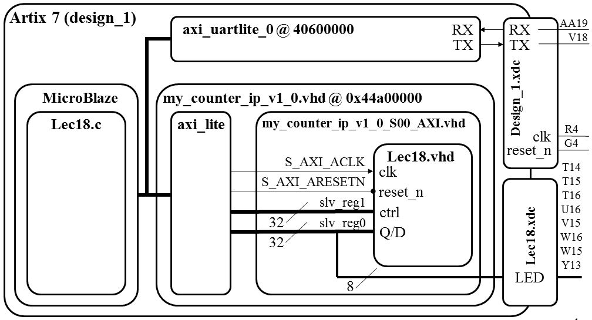

microBlaze + CustomIP
Today's task is to integrate our counter from lecture 10 and the
MicroBlaze with the goal of controlling the counter from code
within the microBlaze and to display the counter output on the LEDs.
In order to accomplish this goal, you will need
to bring quite a few files together. I will reference the
picture below throughout the lecture in order to see where each
particular part fits into the big picture.

Work Flow
The work flow has three main steps.
- Define a new hardware design (MicroBlaze + axi_uartlite) in Vivado IP Integrator
- Create and package new custom IP (your custom hardware) and import it into your Vivado design
- Program the resulting hardware in the SDK environment.
Xilinx Vivado - IP Integrator
This step requires that you start a new hardware design (MicroBlaze + axi_uartlite) in Vivado IP Integrator in a new project called Lecture_18.
You will add a new Block Design with a MicroBlaze and axi_uartlite following the
MicroBlaze Tutorial step by step.
When you hit the "Generate bitstream" button you will need to keep watch on the
Console window for errors. I generally have to go through several iterations of
changes until I get everything correct. Thankfully, syntax errors are caught
early in the compile process, so once this phase is cleared, the rest of the
(lengthy) compile generally proceeds error free.
Part 1: Hardware Questions/Notes related to handout
- Note: the truth table for the counter is in the comments.
- Q: In lec18.vhdl, what other library must be added?
- Q: In lec18.vhdl, does the use work.lec18Parts.all library need to be added?
- Q: In my_counter_ip_v1_0_S00_AXI.vhd, what do the generics C_NUM_REG, C_SLV_DWIDTH do?
- Q: In my_counter_ip_v1_0_S00_AXI.vhd, what two roles is slv_reg0 serving?
- Q: In my_counter_ip_v1_0_S00_AXI.vhd, what roles does slv_reg1 serve?
- Q: In my_counter_ip_v1_0_S00_AXI.vhd, slv_reg0 is on the left and right-hand side
of an assignment. Identify the two lines where this happens.
- Q: In my_counter_ip_v1_0_S00_AXI.vhd, on line 62, what is the role does X"000000" serve?
- Q: If you want a signal to go outside the Artix 7 chip...
- What files must it appear on the entity description?
- What other files must contain information about the signal?
- Q: If you want a signal to go to the MicroBlaze...
- What files must it appear on the entity description?
- In order for the MicroBlaze to read the signal, what must you do?
- In order for the MicroBlaze to write to the signal, what must you do?
Xilinx Software Development Kit - SDK
In the SDK environment, you program the hardware built in the previous step.
The key concept here is that the peripheral defined in Vivado design are accessible through the slave registers as memory mapped devices.
Verify your my_counter_ip_v1_0 Base Address in system.hdf file is assigned to be 0x44a00000.
In the my_counter_ip_v1_0_S00_AXI.vhdl file, I (arbitrarily) assigned counter ports to slave register according to the table below.
| Signal | direction | Slave Register | Address
|
| D | input | slv_reg0(7 downto 0) | 0x44a00000
|
| ctrl | input | slv_reg1(1 downto 0) | 0x44a00004
|
| Q | output | slv_reg0(7 downto 0) | 0x44a00000
|
There are a few items of note. First, the address of slv_reg1 is 4 higher
than the address of slv_reg0. This occurs because the microBlaze has a 32-bit
word and is byte addressable. The D and Q registers occupy the same address
because in the my_counter_ip_v1_0_S00_AXI file, slv_reg0 is on both the left and right hand
side of an assignment.
Part 2: Software Questions/Notes related to handout
- Why doesn't the 'c' command cause the counter to count up by 1?
- On line 132, why did I subtract 0x30?
- After loading the counter on line 132, something should be
done that is missing.
- What line of VHDL code in my_counter_ip_v1_0_S00_AXI.vhd is "activated" when line 80 executes?
- What line of VHDL code in my_counter_ip_v1_0_S00_AXI.vhd is "activated" when line 141 executes?
- What line of VHDL code in lec18.vhdl "activated" when line 141 executes?
- What appears to be the naming convention for hardware registers?